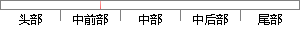

流程如图2.11。图2.11 GFET制备基本 流程图
片段位置图

相似结果
相似片段：
以上几种情况外，其他的一些特殊情况可在实验中测定，然后在软件中列成类似真值表的形式，用于判断具体运动趋势。 判断电机运动趋势的定位程序流程如图2.11。 图2.11 定位程序流程图 （4）模式切换与参数调整及显示 模式与参数控制实现系统在各种轨迹运行模式之间的切换及其相应的参数调整及显示。通过扫描按键的值，把不同
| 对比库： | WriteCheck云资源库 |
| 来源： | www.unsp.com 查看来源 |
| 发布时间： | 2011-01-09 |
| 相似率 | 65.22% （轻度抄袭） |